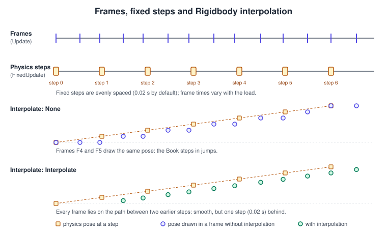
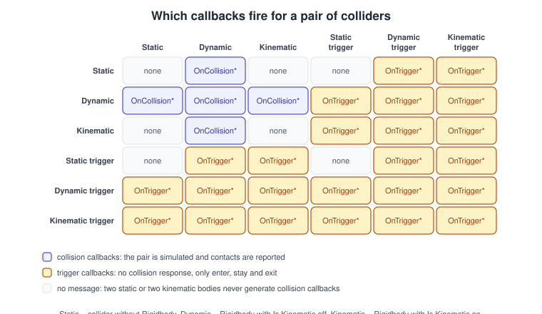
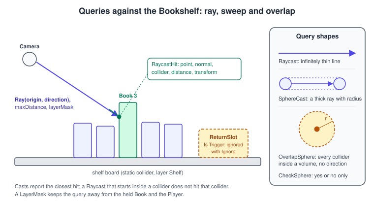
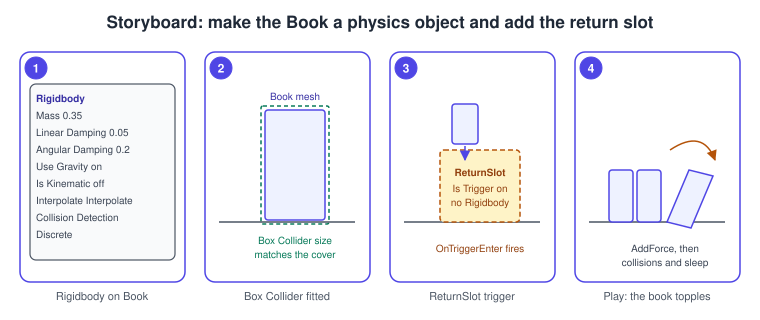

3D Physics
|
This content was generated with the assistance of AI and should be verified against the official documentation before being relied on in production. |
Physics is what makes the Bookshelf feel like a place: a book that is pulled out of the shelf has weight, tips over, slides across a board and comes to rest, and a return slot on the desk notices when a book has been put back. Unity’s built-in 3D physics is an integration of the NVIDIA PhysX engine. You do not call the engine directly; you describe the world with components (Rigidbody, colliders, joints, the CharacterController) and Unity runs a simulation step at a fixed rate, moves the Transforms, and calls your scripts back when bodies touch.
The facts on this page were checked in November 2026 against the Unity 6.3 LTS manual (6000.3, released in December 2025). Where Unity 6.4, 6.5 or 6.6 changed something, the text
says so. The examples target a new project made from the Universal 3D template with the Input System package (the default in Unity 6) and run on every platform Unity builds for. This is the physics step of the running example,
"physics (books topple, a trigger return slot, raycast picking)": the shared model is imported from
bookshelf.glb, the books carry the BookBody script defined below, and
the pointer comes from the Input System. The engine-neutral theory (integration, collision detection phases, constraints) is in
Physics, Audio and Input Basics; this page is the Unity-specific half. For data-oriented physics on entities (the Unity Physics
package) see DOTS: ECS, Jobs and Burst, and for 2D see 2D Physics.
How a physics step runs

Rendering and physics run on different clocks. A frame (the Update loop) takes as long as it takes; a physics step always simulates the same slice of game time, the Fixed Timestep. Its default is 0.02 seconds, that is 50 steps per second,
and it is set in Edit > Project Settings > Time or in code with Time.fixedDeltaTime. Each frame, Unity works out how many whole fixed steps have elapsed since the last one, then for each of them calls every
FixedUpdate and runs one simulation step. A fast frame may contain no step at all; a slow one may contain several. After the steps the physics engine writes the new poses back to the Transforms
and calls the collision and trigger callbacks.
-
Do physics work in
FixedUpdate. Applying a force or setting a velocity there makes the result independent of the frame rate.AddForceonly accumulates the force; the engine applies it during the next simulation run. -
Read input in
Update, apply it inFixedUpdate. Store what the player asked for in a field (theBookBody.RequestPullmethod below does this) and consume it on the next step. Input events can arrive several times between two steps. -
There is a ceiling. Maximum Allowed Timestep (
Time.maximumDeltaTime) bounds how much game time a single frame may simulate, so a hitch cannot cause a spiral of ever longer frames. The simulation then runs slower than real time instead of catching up. -
Time.timeScalescales the fixed step too. AtimeScaleof 0 stops the simulation, a value of 0.5 makes fixed steps occur every 0.04 seconds of real time.
Interpolation and extrapolation
Because the simulation moves at 50 Hz and the screen at (for example) 144 Hz, a moving body would be drawn in the same place for two or three frames, then jump. The Rigidbody’s Interpolate setting hides this: Interpolate draws the body between its two previous physics poses (smooth, but one step behind), Extrapolate predicts ahead from the last pose (no lag, but it can overshoot when the body bounces), None draws the raw pose. Use Interpolate on anything the camera follows or the player watches closely; leave it off for bodies that nobody looks at, because it costs a little per body.
Two consequences matter in practice. A camera that follows a Rigidbody must run after the Transform has been updated, which Cinemachine arranges (see Cameras and Cinemachine), and Transform
changes you make by hand are not seen by physics queries until the next step unless you call Physics.SyncTransforms.
Rigidbody
A Rigidbody gives a GameObject mass and lets the engine move it with forces, gravity and collisions. The distance between any two points of a rigid body stays constant; Unity does not deform it (soft bodies and cloth are separate systems).
If an object has a Rigidbody you move it through the Rigidbody, not through the Transform: writing transform.position teleports the body, defeats collision detection and wakes or confuses the solver.
| Property | What it does |
|---|---|
Mass |
In kilograms, default 1. Mass does not change how fast something falls, only how it responds to forces and how it shares impulses in a collision. As a rule of thumb keep the mass ratio between touching bodies below about 10 to 1, or stacks become unstable. |
Linear Damping, Angular Damping |
Decay rate of linear and angular velocity, to imitate drag and friction in air. The scripting reference gives the formula as |
Automatic Center Of Mass, Automatic Tensor |
The engine derives the center of mass and the inertia tensor from the attached colliders. Turn the automatic options off only to tune stability, for example a lower center of mass for a tall book that should not tip easily. |
Use Gravity |
Whether the global gravity (default 9.81 metres per second squared downwards, set in the Physics settings) acts on the body. |
Is Kinematic |
The engine no longer moves the body; you move it through its Transform or |
Interpolate |
None, Interpolate or Extrapolate, described above. |
Collision Detection |
Discrete (default), Continuous Speculative, Continuous or Continuous Dynamic, described below. |
Constraints |
Freeze Position and Freeze Rotation per axis. Freezing rotation on a character-like body stops it from tipping over. |
Layer Overrides |
Layer Override Priority, Include Layers and Exclude Layers override the project-wide collision matrix for all colliders on this body. |
Velocity, forces and ForceMode
In Unity 6 the velocity properties are linearVelocity and angularVelocity, and the damping properties are linearDamping and angularDamping. Set linearVelocity for an instant change that ignores mass, such as
a launch. For everything else apply forces, which the engine integrates properly. The ForceMode argument chooses what the number means:
| ForceMode | Meaning | Use it for |
|---|---|---|
|
Newtons: a continuous force, applied over the step, divided by mass. |
Thrusters, wind, anything you apply every |
|
Metres per second squared: like |
Gravity-like effects that should move every object the same. |
|
Newton-seconds: an instant push, divided by mass. |
A shove, a jump, pulling a book off the shelf (called once). |
|
Metres per second: an instant velocity change that ignores mass. |
Knock-back that must give every object the same speed. |
AddForce applies a force through the center of mass; AddForceAtPosition and AddExplosionForce also create torque; AddTorque applies torque alone. The default maxAngularVelocity
is 50 radians per second (clamped before each step), and you can raise it per body for wheels. Unity 6 fixed a long-standing math error in the torque computed by AddForceAtPosition and AddExplosionForce with VelocityChange or Acceleration: the force is now
scaled by the inertia tensor, so projects upgraded from 2022 LTS may see different spin. The upgrade guide gives the formulas to reproduce the old behavior.
Moving things: which component
A static collider (a collider without a Rigidbody) that you move every frame forces the engine to rebuild acceleration structures; give anything that moves a Kinematic Rigidbody instead.
Sleeping
A body whose motion falls below the Sleep Threshold in the Physics settings goes to sleep: the engine stops simulating it until something touches it or you call WakeUp. Sleeping is why a settled pile of books costs almost nothing, so do not keep
bodies awake with tiny forces. A sleeping body may fail to wake when a static collider is moved with its Transform; call Rigidbody.WakeUp yourself in that case. Rigidbody.IsSleeping() is a handy test condition.
Collision detection modes
| Mode | Algorithm | Use it when |
|---|---|---|
Discrete |
Tests the pose at the end of each step. |
Slow, ordinary bodies: books, crates. Always try this first. |
Continuous Speculative |
Speculative CCD: adds contacts before the shapes touch. |
Fast bodies that miss collisions in Discrete; cheaper than sweep modes and works for rotating bodies. |
Continuous |
Sweep CCD against static colliders only. |
A fast body that only has to hit walls and floors. |
Continuous Dynamic |
Sweep CCD against static and dynamic colliders. |
A fast body that must hit other moving bodies, such as a thrown book hitting a rolling one. |
Raise the mode only for the few bodies that tunnel through thin colliders, because every continuous mode costs more than Discrete. Reducing the Fixed Timestep also reduces tunneling, at the price of more steps.
Colliders
A collider is the invisible shape the engine uses for contact; it does not have to match the visible mesh. The cheapest shapes are the primitives (Box, Sphere, Capsule), and a body can have several colliders on child objects to form a compound shape. Prefer a few primitives to a Mesh Collider.
| Collider | Notes |
|---|---|
Box, Sphere, Capsule |
Fast and stable. A book is a Box Collider; the librarian is a Capsule. |
Mesh Collider |
Uses a mesh. A non-convex Mesh Collider is allowed only on static or kinematic bodies; a dynamic body needs Convex, which the engine limits to a small number of triangles. Cooking options trade build and load time for query accuracy. Since Unity 6.6 a mesh used by a Mesh Collider must have Read/Write enabled in its import settings, or the build fails. |
Wheel Collider, Terrain Collider |
Specialized shapes for vehicles and terrain. |
Colliders are classed by the body they belong to. A static collider has no Rigidbody and never moves. A dynamic collider is on a non-kinematic Rigidbody. A kinematic collider is on a Rigidbody with Is Kinematic enabled. Scale colliders through the Transform of their own GameObject; non-uniform scale on a parent of a rotating collider produces skewed shapes the engine cannot represent.
Physics Materials
A Physics Material (the asset class is PhysicsMaterial) has Dynamic Friction, Static Friction, Bounciness and Friction Combine and Bounce Combine modes (Average, Minimum, Multiply, Maximum) that decide how the values of the two colliding
colliders are merged. Assign it to a collider’s Material field; colliders without one use the project’s default material from the Physics settings. The Bookshelf uses a low-friction material on the cover so that a pulled book slides.
Collisions, triggers and layers

When two colliders touch, Unity sends one of two families of messages. A collision is a physical contact: the bodies bounce, slide and push each other, and your scripts get OnCollisionEnter, OnCollisionStay and
OnCollisionExit with a Collision argument (contact points, normals, the relative velocity and the other collider). A trigger (a collider with Is Trigger enabled) has no physical response; other colliders pass through it and your scripts get
OnTriggerEnter, OnTriggerStay and OnTriggerExit with the other Collider. The rule in the figure is short: there has to be at least one dynamic collider in the pair, otherwise nothing is sent for two static colliders or two kinematic bodies.
-
Triggers on a static collider are the usual choice for zones (a pickup area, a cutscene start). A trigger is cheaper than a collision.
-
Callbacks are delivered to scripts on the GameObject that has the collider and to scripts on the Rigidbody’s GameObject, which is why
other.attachedRigidbodyis the reliable way to reach the thing that entered. -
OnTriggerExitis not called when a collider is disabled, deactivated or destroyed while inside. If your logic needs an exit event, keep your own set of what is inside and check it on every physics step, as theReturnSlotbelow does. Record anEntityId(or a reference) for what entered, because the destroyed object cannot tell you who it was. -
Collision callbacks run during the simulation step, after all
FixedUpdatecalls. Do not destroy or move a body inside the callback if you can instead mark it and handle it in the nextFixedUpdate.
Source: Manual: Interaction between collider types, Manual: OnTrigger events and Manual: OnCollision events
Layers and the collision matrix
Every GameObject has a layer. In Edit > Project Settings > Physics the Layer Collision Matrix decides which layer pairs collide at all (and trigger), and pairs you uncheck never reach the narrow phase or your callbacks.
The Bookshelf defines the layers Books, Shelf, Player and Triggers: books collide with Shelf, Player and other Books, the Triggers layer only reacts to Books. A per-body override is available through a collider’s or Rigidbody’s
Include Layers and Exclude Layers, and in code Physics.IgnoreCollision(a, b) and Physics.IgnoreLayerCollision(x, y) switch a pair off at run time (while a player holds a book it should not collide with the player’s own capsule).
Queries: raycasts, sweeps and overlaps

Queries ask the physics world a question without simulating anything. They run immediately on the current state of the world, which is the state at the end of the last step plus any Transform changes you synced.
-
Physics.Raycastreturns the closest collider along a ray: its parameters are the origin and direction (or aRay), amaxDistance, a layer mask and aQueryTriggerInteraction. TheRaycastHitgivespoint,normal,distance,collider,rigidbodyandtransform. A ray that starts inside a collider does not hit that collider. -
Physics.SphereCast,BoxCastandCapsuleCastsweep a volume along the ray; use them when the thing you test has thickness (a character walking into a doorway). -
Physics.OverlapSphere,OverlapBoxandOverlapCapsulereturn every collider inside a volume, andPhysics.CheckSphere,CheckBoxandCheckCapsuleonly answer yes or no, which is cheaper. -
Physics.Linecasttests a segment between two points, for line of sight. -
The
NonAllocvariants write the results into an array you supply and return the count. They do not allocate memory, so use them in code that runs every frame; reuse one buffer. -
Physics.RaycastAlland the otherAllvariants allocate a new array on every call and do not order the hits; avoid them inUpdate.
A layer mask is an int whose bits select layers; in C# declare a LayerMask field with [SerializeField] and pick layers in the Inspector, or build one with LayerMask.GetMask("Books"). Trigger colliders are included by default, as set by Physics.queriesHitTriggers;
pass QueryTriggerInteraction.Ignore to skip them in one call. Raycasts in FixedUpdate are the safest, because the world is in a consistent state there, but a click-picking ray in Update is fine.
Source: Scripting API: Physics.Raycast, Scripting API: Physics.OverlapSphereNonAlloc and Scripting API: RaycastHit
Picking with the pointer
To pick what the player points at, convert the pointer position (pixels, lower left origin) into a world ray with Camera.ScreenPointToRay, and cast it. The next section has the complete script. The camera ray starts on the near plane, so a ray never
hits what lies behind the camera; the frustum geometry is in Cameras and Cinemachine.
The CharacterController
A CharacterController is a capsule that walks: it follows floors, climbs small steps, slides along walls and stops at obstacles, without realistic momentum. It is not a Rigidbody, it has no mass and nothing pushes it. It is the right choice for a first- or third-person character whose acceleration is designed rather than simulated. Its settings are Slope Limit, Step Offset, Skin Width, Min Move Distance, Center, Radius and Height.
-
Move(Vector3 motion)moves by an absolute displacement and applies no gravity; it returnsCollisionFlagsthat say which sides touched something. Multiply byTime.deltaTimeyourself. -
SimpleMove(Vector3 speed)takes a velocity in metres per second, applies gravity and ignores the vertical component of the input. -
isGroundedreflects the lastMovecall, so read it after moving, and keep a small downward speed while grounded so the flag stays stable. -
The controller does not push Rigidbodies by itself. Implement
OnControllerColliderHitand push the body you hit.
Joints
A joint connects a Rigidbody to another Rigidbody or to the world and removes degrees of freedom. The built-in joints are the Fixed Joint (glues two bodies), Hinge Joint (a door or a lever: one axis of rotation, optional limits, motor and spring), Spring Joint
(a rubber band), Character Joint (a ball and socket with twist limits, for ragdolls) and the Configurable Joint, which exposes every axis separately and is the base for the others. Set Break Force and Break Torque so a joint
breaks (and OnJointBreak is called) when it is overloaded. A joint can attach a Kinematic body to a dynamic one, but it can then move only the dynamic one. For many linked bodies, such as a robot arm, the Articulation Body is more stable than a chain of joints.
Source: Manual: Joints and Manual: Hinge Joint
Controlling the simulation
By default the engine simulates after the FixedUpdate calls of each frame. Physics.simulationMode changes when: FixedUpdate (default), Update (once per frame with the frame delta) or Script (never, until you call Physics.Simulate(float step)).
Script mode is used for deterministic replays, networked rollback, fast-forwarding and tests. It replaces the old Physics.autoSimulation flag. A game that uses physics only for queries (raycasts against static scenery) can disable the simulation entirely to save the per-frame cost.
Unity 6.3 also lets you disable physics simulation for GameObjects (set the GameObject SDK to None in the Physics settings) and strip the physics integration from the build; the linked manual page describes the steps for projects that never use physics.
Physics.ContactEvent is a static event that delivers all contacts of a step in a batch; subscribe to it when you need contacts without the per-object message overhead, for example a sound system that wants every impact of the frame.
Procedure: make the Book a physics object

This procedure starts from the Bookshelf scene (a shelf, a Book prefab built from bookshelf.glb and the layers Books, Shelf and Triggers).
-
Select the
Bookprefab in the Project window and open it in Prefab Mode (double-click it).Source: Manual: Prefabs
-
Choose Add Component > Physics > Box Collider and click Edit Collider to fit the box to the cover, or type the Size from the mesh bounds. Set the object’s layer to Books.
Source: Manual: Collider shapes
-
Choose Add Component > Physics > Rigidbody. Set Mass to 0.35, Linear Damping to 0.05, Angular Damping to 0.2, Interpolate to Interpolate and leave Collision Detection on Discrete.
-
Create a Physics Material (from the Assets > Create menu), set a low Dynamic Friction, and drag it onto the box collider’s Material field.
Source: Manual: Collider surfaces
-
In the scene create an empty GameObject named
ReturnSloton the desk, add a Box Collider, enable Is Trigger, set its layer to Triggers, and add theReturnSlotscript below. Do not add a Rigidbody to it. -
Open Edit > Project Settings > Physics and clear the checkbox for the pair Triggers and Shelf so only Books enter the slot. Press Play and pull a book with the picker script.
The Bookshelf physics scripts
All scripts are in the Bookshelf.Gameplay namespace (do not call a namespace Physics, or Physics.Raycast will stop compiling). They need a project with the Input System package and an actions asset that has Point and Click actions
(see Input System).
BookBody: a toppling book
using System;
using UnityEngine;
namespace Bookshelf.Gameplay
{
/// <summary>Configures a book as a rigid body and exposes pull and impact.</summary>
[RequireComponent(typeof(Rigidbody), typeof(BoxCollider))]
public sealed class BookBody : MonoBehaviour
{
[SerializeField, Min(0.05f)] private float _mass = 0.35f;
[SerializeField, Min(0f)] private float _linearDamping = 0.05f;
[SerializeField, Min(0f)] private float _angularDamping = 0.2f;
[SerializeField, Min(0f)] private float _pullImpulse = 1.2f; // newton-seconds
[SerializeField, Min(0f)] private float _impactThreshold = 1.5f; // metres per second
private Rigidbody _body;
private Vector3 _pendingImpulse;
private bool _hasPendingImpulse;
public Rigidbody Body => _body;
/// <summary>Raised on a collision faster than the threshold; used for sound and dust.</summary>
public event Action<BookBody, float> Impact;
private void Awake()
{
_body = GetComponent<Rigidbody>();
_body.mass = _mass;
_body.linearDamping = _linearDamping;
_body.angularDamping = _angularDamping;
_body.interpolation = RigidbodyInterpolation.Interpolate;
_body.collisionDetectionMode = CollisionDetectionMode.Discrete;
}
/// <summary>Call from Update; the impulse is applied on the next physics step.</summary>
public void RequestPull(Vector3 direction)
{
_pendingImpulse = direction.normalized * _pullImpulse;
_hasPendingImpulse = true;
}
private void FixedUpdate()
{
if (!_hasPendingImpulse)
{
return;
}
_body.AddForce(_pendingImpulse, ForceMode.Impulse);
_hasPendingImpulse = false;
}
private void OnCollisionEnter(Collision collision)
{
float speed = collision.relativeVelocity.magnitude;
if (speed >= _impactThreshold)
{
Impact?.Invoke(this, speed);
}
}
}
}The impulse is stored in Update-time code and applied in FixedUpdate, which keeps the pull independent of the frame rate. Collision.relativeVelocity is the closing speed of the two bodies, a better measure of impact strength than either body’s own speed.
ReturnSlot: a trigger that knows when a book is back
using System;
using System.Collections.Generic;
using UnityEngine;
namespace Bookshelf.Gameplay
{
/// <summary>Raises BookReturned when a book has settled inside the slot.</summary>
[RequireComponent(typeof(BoxCollider))]
public sealed class ReturnSlot : MonoBehaviour
{
[SerializeField, Min(0f)] private float _settleSeconds = 0.5f;
[SerializeField, Min(0f)] private float _restSpeed = 0.05f;
private readonly Dictionary<BookBody, float> _inside = new Dictionary<BookBody, float>();
private readonly List<BookBody> _toRemove = new List<BookBody>();
public event Action<BookBody> BookReturned;
private void Reset()
{
GetComponent<BoxCollider>().isTrigger = true;
}
private void OnTriggerEnter(Collider other)
{
Rigidbody rb = other.attachedRigidbody;
if (rb != null && rb.TryGetComponent(out BookBody book))
{
_inside[book] = Time.time;
}
}
private void OnTriggerExit(Collider other)
{
Rigidbody rb = other.attachedRigidbody;
if (rb != null && rb.TryGetComponent(out BookBody book))
{
_inside.Remove(book);
}
}
private void FixedUpdate()
{
_toRemove.Clear();
foreach (KeyValuePair<BookBody, float> pair in _inside)
{
BookBody book = pair.Key;
// OnTriggerExit is not sent for destroyed or disabled colliders, so test here.
if (book == null || !book.isActiveAndEnabled)
{
_toRemove.Add(book);
continue;
}
bool settled = Time.time - pair.Value >= _settleSeconds
&& book.Body.linearVelocity.magnitude <= _restSpeed;
if (settled)
{
_toRemove.Add(book);
BookReturned?.Invoke(book);
}
}
for (int i = 0; i < _toRemove.Count; i++)
{
_inside.Remove(_toRemove[i]);
}
}
}
}Two details are deliberate. The slot has no Rigidbody, so it is a static trigger and costs almost nothing, yet it still receives events because the book is dynamic. And it never relies on OnTriggerExit alone: it checks for destroyed or deactivated books on every step, as the
manual recommends.
BookPicker: raycast picking with the Input System
using System;
using UnityEngine;
using UnityEngine.InputSystem;
namespace Bookshelf.Gameplay
{
/// <summary>Casts a ray from the pointer through the camera and pulls the book it hits.</summary>
public sealed class BookPicker : MonoBehaviour
{
[SerializeField] private Camera _camera;
[SerializeField] private InputActionReference _point; // Value action, Vector2 (pointer position)
[SerializeField] private InputActionReference _click; // Button action
[SerializeField] private LayerMask _bookMask;
[SerializeField, Min(0.1f)] private float _maxDistance = 6f;
public event Action<BookBody> Hovered;
public event Action<BookBody> Picked;
private BookBody _hovered;
private void Awake()
{
if (_camera == null)
{
_camera = Camera.main;
}
}
private void OnEnable()
{
_point.action.Enable();
_click.action.Enable();
_click.action.performed += OnClick;
}
private void OnDisable()
{
_click.action.performed -= OnClick;
}
private void Update()
{
BookBody book = TryPick(out _);
if (book != _hovered)
{
_hovered = book;
Hovered?.Invoke(book);
}
}
private void OnClick(InputAction.CallbackContext context)
{
BookBody book = TryPick(out RaycastHit hit);
if (book == null)
{
return;
}
Vector3 towardCamera = _camera.transform.position - hit.point;
book.RequestPull(towardCamera);
Picked?.Invoke(book);
}
private BookBody TryPick(out RaycastHit hit)
{
Vector2 screenPoint = _point.action.ReadValue<Vector2>();
Ray ray = _camera.ScreenPointToRay(screenPoint);
if (Physics.Raycast(ray, out hit, _maxDistance, _bookMask, QueryTriggerInteraction.Ignore)
&& hit.rigidbody != null
&& hit.rigidbody.TryGetComponent(out BookBody book))
{
return book;
}
return null;
}
}
}Camera.main is cached by Unity and costs about as much as a GetComponent call, but the script still reads it once. The ray is limited to the Books layer and ignores triggers, so a ReturnSlot in front of a book never blocks the click. RaycastHit.rigidbody is null for
colliders without a Rigidbody, which is why the script tests it before use.
Overlap queries without allocating
using UnityEngine;
namespace Bookshelf.Gameplay
{
/// <summary>Counts the books near the desk lamp each physics step without allocating.</summary>
public sealed class LampProximity : MonoBehaviour
{
[SerializeField, Min(0.1f)] private float _radius = 1.5f;
[SerializeField] private LayerMask _bookMask;
private readonly Collider[] _buffer = new Collider[32];
public int BooksInLight { get; private set; }
private void FixedUpdate()
{
BooksInLight = Physics.OverlapSphereNonAlloc(
transform.position, _radius, _buffer, _bookMask, QueryTriggerInteraction.Ignore);
}
private void OnDrawGizmosSelected()
{
Gizmos.color = Color.yellow;
Gizmos.DrawWireSphere(transform.position, _radius);
}
}
}If more colliders overlap than the buffer can hold, the extra ones are silently dropped, so size the buffer for the worst case you care about.
LibrarianWalker: a CharacterController
using UnityEngine;
using UnityEngine.InputSystem;
namespace Bookshelf.Gameplay
{
/// <summary>Walks the librarian with a CharacterController and pushes loose books.</summary>
[RequireComponent(typeof(CharacterController))]
public sealed class LibrarianWalker : MonoBehaviour
{
[SerializeField] private InputActionReference _move; // Value action, Vector2
[SerializeField, Min(0f)] private float _speed = 3f;
[SerializeField] private float _gravity = -9.81f;
[SerializeField, Min(0f)] private float _pushSpeed = 1.5f;
private CharacterController _controller;
private float _verticalSpeed;
private void Awake()
{
_controller = GetComponent<CharacterController>();
}
private void OnEnable()
{
_move.action.Enable();
}
private void Update()
{
Vector2 input = _move.action.ReadValue<Vector2>();
Vector3 planar = (transform.right * input.x + transform.forward * input.y) * _speed;
if (_controller.isGrounded && _verticalSpeed < 0f)
{
_verticalSpeed = -2f; // keeps isGrounded stable
}
_verticalSpeed += _gravity * Time.deltaTime;
Vector3 motion = (planar + Vector3.up * _verticalSpeed) * Time.deltaTime;
_controller.Move(motion);
}
private void OnControllerColliderHit(ControllerColliderHit hit)
{
Rigidbody body = hit.rigidbody;
if (body == null || body.isKinematic || hit.moveDirection.y < -0.3f)
{
return;
}
Vector3 push = new Vector3(hit.moveDirection.x, 0f, hit.moveDirection.z);
body.linearVelocity = push * _pushSpeed;
}
}
}The vertical speed is kept by the script, because Move applies no gravity. The small negative value while grounded keeps the capsule pressed to the floor so isGrounded does not flicker on slopes.
CabinetDoor: a hinged door
using UnityEngine;
namespace Bookshelf.Gameplay
{
/// <summary>Hinges a cabinet door to the shelf unit with limits and a closing spring.</summary>
[RequireComponent(typeof(Rigidbody))]
public sealed class CabinetDoor : MonoBehaviour
{
[SerializeField] private Rigidbody _cabinet; // the shelf body the door hangs on
[SerializeField] private Vector3 _hingeLocalAnchor = new Vector3(-0.5f, 0f, 0f);
[SerializeField, Range(0f, 170f)] private float _maxOpenAngle = 100f;
[SerializeField, Min(0f)] private float _breakForce = 500f;
private void Awake()
{
HingeJoint hinge = gameObject.AddComponent<HingeJoint>();
hinge.connectedBody = _cabinet;
hinge.autoConfigureConnectedAnchor = true;
hinge.anchor = _hingeLocalAnchor;
hinge.axis = Vector3.up;
hinge.useLimits = true;
hinge.limits = new JointLimits { min = 0f, max = _maxOpenAngle };
hinge.useSpring = true;
hinge.spring = new JointSpring { spring = 5f, damper = 0.5f, targetPosition = 0f };
hinge.breakForce = _breakForce;
}
}
}Source: Manual: Hinge Joint and Scripting API: HingeJoint
A Play Mode test for the book
using System.Collections;
using NUnit.Framework;
using UnityEngine;
using UnityEngine.TestTools;
namespace Bookshelf.Tests
{
public sealed class BookPhysicsTests
{
[UnityTest]
public IEnumerator DroppedBook_ComesToRestOnBoard()
{
GameObject board = GameObject.CreatePrimitive(PrimitiveType.Cube);
board.transform.localScale = new Vector3(2f, 0.1f, 1f);
GameObject book = GameObject.CreatePrimitive(PrimitiveType.Cube);
book.transform.localScale = new Vector3(0.2f, 0.3f, 0.05f);
book.transform.position = new Vector3(0f, 0.6f, 0f);
Rigidbody body = book.AddComponent<Rigidbody>();
// Physics runs in FixedUpdate, so wait for game time, not for a frame count.
yield return new WaitForSeconds(2f);
Assert.That(body.linearVelocity.magnitude, Is.LessThan(0.05f));
Assert.That(book.transform.position.y, Is.InRange(0.15f, 0.25f));
Object.Destroy(book);
Object.Destroy(board);
}
}
}Source: Test Framework manual
The test needs an assembly definition that references the Test Framework and has Test Assemblies enabled; more on that in Testing and CI.
Common mistakes
-
Moving a Rigidbody through its Transform. It teleports through colliders and confuses interpolation. Use forces,
linearVelocity,MovePositionorMoveRotationinFixedUpdate. -
Applying forces in
Update. The result then depends on the frame rate. Collect input inUpdate, apply inFixedUpdate. -
A Rigidbody on a child of a moving Rigidbody. A child Rigidbody simulates in world space, independent of its parent, so the parent’s motion does not carry it.
-
No collider, wrong collider. A Rigidbody without a collider falls through everything; a collider much larger than the mesh makes books float.
-
Non-convex Mesh Collider on a dynamic body. It is rejected. Use convex hulls or compound primitives.
-
Expecting
OnTriggerEnterbetween two static colliders or two kinematic bodies. At least one dynamic collider is required (see the matrix). -
Relying on
OnTriggerExitfor destroyed objects. It does not fire; keep your own set. -
Calling
GetComponentinOnTriggerStay. It runs every step for every pair; cache the result or useTryGetComponenton entry. -
Raycasting without a layer mask. The ray hits the player’s own collider, triggers, and anything else. Pass a mask and
QueryTriggerInteraction.Ignore. -
Using the
Alland the allocating overlap queries inUpdate. They produce garbage every frame. Use theNonAllocforms. -
Fixed timestep too small. Halving it doubles the physics cost. Raise the mode of the few fast bodies instead.
-
Scaling a collider’s parent non-uniformly. Rotating children get a sheared shape the engine cannot represent.
-
Forgetting that
Movehas no gravity. Add it yourself or useSimpleMove. -
Setting
Time.timeScaleto 0 and still seeing motion.Update-driven code and unscaled time keep running; only the physics step stops.
Performance notes
-
Measure first. The Profiler shows a Physics section (and the Physics Debug window draws colliders, contacts and sleeping bodies); optimize the bodies that appear in it, not all of them.
-
Use primitive colliders, and let bodies sleep. A pile of 500 settled books should be nearly free.
-
Use the layer collision matrix to remove pairs that never need to collide, and filter every query with a layer mask.
-
Keep the fixed timestep at 0.02 unless profiling says otherwise; for a low-end target 0.033 (30 Hz) can be acceptable if you use interpolation and Continuous Speculative on fast bodies.
-
Use Continuous modes only on the bodies that need them, and Interpolate only on bodies the player watches.
-
Do not move static colliders every frame; give them a Kinematic Rigidbody.
-
Reuse buffers for
NonAllocqueries and avoidPhysics.SyncTransformsandautoSyncTransforms-style behavior unless a query truly needs fresh Transforms. -
Mesh Collider cooking is expensive; bake meshes in the Editor and tune the cooking options for runtime-generated meshes.
-
A thousand dynamic bodies are a CPU problem for the object-oriented physics; the Unity Physics package on entities scales further (see DOTS: ECS, Jobs and Burst). General advice is in Profiling and Optimization.
What changed recently
| Version | Change |
|---|---|
Unity 6.0 (2024) |
|
Unity 6.3 LTS (December 2025) |
The physics integration can be disabled and stripped from a project; the Physics settings choose the GameObject SDK (PhysX by default). |
Unity 6.5 |
The obsolete component accessors such as |
Unity 6.6 |
A mesh that a Mesh Collider needs on the CPU must have Read/Write enabled in its import settings; the build fails otherwise. |
Where the books are outdated
The two books cover this topic in the following places (UIA is Unity in Action, third edition, which targets Unity 2020.3 LTS, and GDP is Game Development Patterns with Unity 2021, second edition). Only UIA covers physics, in chapters 2, 3 and 9 (raycasts, 3D physics, the CharacterController); GDP does not teach it.
| Book and chapter | What the book shows | What is current in Unity 6.3 LTS |
|---|---|---|
UIA (whole book) |
Unity 2020.3 LTS, Built-in Render Pipeline, legacy Input Manager |
Unity 6.3 LTS (and 6.6); URP is the default template and the Input System package is installed by default. |
UIA ch. 6 and 9 |
|
|
UIA ch. 2, 3, 6 and 8 |
|
The Input System: read a Point action and call |
UIA ch. 2, 3 and 9 |
Raycasts, 3D physics and the CharacterController |
The concepts are unchanged. Pass a |
See also
-
Physics, Audio and Input Basics: the engine-neutral theory this page implements in Unity.
-
Game Loop and Frame Timing: fixed versus variable steps and the accumulator that Unity’s
FixedUpdateis built on. -
Coordinate Spaces and Transforms: world, local and screen space for rays and contact points.
-
2D Physics: Rigidbody 2D, effectors and the Physics Core 2D API.
-
Cameras and Cinemachine: the camera that raycast picking starts from.
-
Input System: pointer and action setup for the picker.
-
C# Scripting and the MonoBehaviour Lifecycle: where
FixedUpdatefits in the player loop. -
GameObjects, Components and Transforms: layers, tags and the component model.
-
Animation and Mecanim: ragdolls and physics-driven animation.
-
Navigation and AI: agents that move without a Rigidbody.
-
C# delegates, lambdas and events: the
event Actionpattern used by the scripts above.